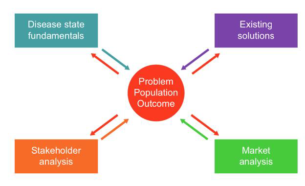
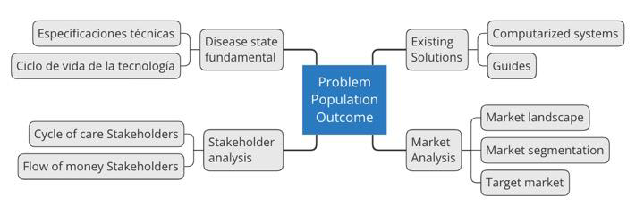

Determinación de Necesidad
En base a la identificación del problema, población y resultado esperado es posible elaborar la exploración de las necesidades. A continuación, se muestran los 4 componentes para la exploración de las necesidades y debajo, la exploración específica para este caso clínico.

